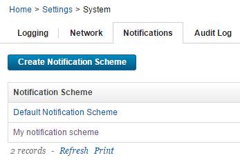
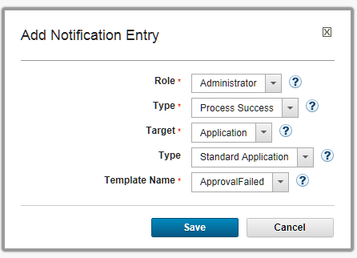

Creating Notifications in a Notification Scheme
Notifications are defined in a notification scheme. This topic describes how to configure notifications as part of a notification scheme. The notification scheme is assigned to an application and the notifications are sent during the deployment of that application.
Each notification in a notification schemes must specify the group of users that will receive the notifications. Each user in the group must have a valid email address defined on the HCL® UrbanCode™ Deploy server. An external SMTP mail server is also required.
Prior to configuring notifications, the following prerequisites must be met.
| Prerequisite | Description |
|---|---|
| An external SMTP mail server is required to send notifications. | For information about configuring a mail server, see Server settings |
| Notification recipients must have defined security system roles. | See Managing security |
| Notification recipients must have email addresses defined on the UrbanCode Deploy server. | See Server settingsNote: Email addresses are not automatically imported from authentication servers such as LDAP servers. Click Settings > Authentication, edit a user, and ensure that the user has an e-mail address attached. |
|
Notification schemes can be configured to hold multiple notifications related to an application. Since notification schemes are a system-resource, they and can be shared across applications for ease of use.
Each notification you configure in a notification scheme must specify: a notification template, a triggering event, and a user group role to receive the notification. The user group role is inherited from the security system. For example, it is common for an administrator or environment owner to be notified when a work item is generated.
Note: Notifications are not sent to users assigned to any role on the System Team, regardless of whether or not that role is configured to receive notifications for the application.
-
Create the new notification scheme. Later, you can come back to add more notifications to the scheme or edit existing notifications. Display the Notifications pane. Click Settings > Notification Schemes 
-
Click Create Notification Scheme and provide a Name and Description for the new notification scheme. (To edit an existing notification scheme, select that scheme in the list.)
-
Configure a notification for the notification scheme. Click Add Notification Entry, and supply parameters for the notification at the Add Notification Entry window. Notification parameters are listed in the following table. 
Parameter Description Values Role Role corresponds to the roles in the security system. The notification message goes to any user who has the specified role on a team that is associated with the Target element. For example, a deployment engineer would be interested in being notified about a failed deployment. <user group role> Event Type This field lists the type of event that will trigger the notification. For example, you can trigger a notification when a processes completes successfully. You can also trigger a notification when an approval is declined.Note: The Event Type selected should correspond to the type of process (generic, application, environment, resource, or approval) that triggers the event.
Refer to Processes and Creating an approval process.
|Select these event types for generic and application processes: - Process Success - Process Failure - Process Started Select these event types for approval processes:
- **Approval Completed**
- **Approval Failed**
| |Target|The Target specifies the area of the deployment where the Event Type occurs. The target refers to the general concept of an application, environment, or resource in the deployment.| - Application - Environment - Resource | |Type| The target can be further refined using the Type field. The Type pull-down lists the security types defined in a role's application, environment or resource permissions. Notifications will only be sent to users with roles that are configured with the selected security type indicated in the Type pull-down. Refer to Creating roles and assigning permissions
For example, if the Target field is set to Application, notifications are only sent to users that are configure in that specific application permission security type when the application is deployed.
|<security type>| |Template Name|Default notification templates are provided for use. The templates contain fields that are automatically populated and formatted in the email when the notification is sent to the selected role. The template you select should be based on the Event Type, or reason for the notification. You can select a default notification template or a notification template you have created. See Creating notification templates.
Note: The ApprovalCreated notification template is NOT intended for use in a notification scheme. It appears in the Template Namedrop-down, but should only be assigned as a single template when Creating an approval process to notify an approver that an approval is required.
| Use these default notification templates for Process Success, Process Failure, or Process Started event types.
- **ProcessRequestStarted** - indicates that a specific application, user group environment, or application resource was initiated.
- **ApplicationDeploymentSuccess** or **ApplicationDeploymentFailure**- indicates that a specific application deployment succeeded or failed.
- **TaskCreated** - reports on the state of manual tasks.
- **DeploymentReadied** - notifies the role that the deployment requires approval.
- **GenericProcessRequestStarted** - indicates that a [Generic processes](genProcess_ch.md#) was started.
- **GenericProcessSuccess** or **GenericProcessFailure** - indicates that a [Generic processes](genProcess_ch.md#) succeeded or failed.
Use these notification templates for Approval Completed or Approval Failed event types.
- **Deployment Readied** - indicates that an approval was granted for an approval process.
- **ApprovalFailed** - indicates that approval was denied for an approval process.
|
- Assign a notification scheme to an application or approval process. For an application process, click the application, go to the Configuration tab, and in the Notification Scheme list, select the notification scheme. For an approval process, click the application, go to the Approval Process tab, edit the required process step and assign the approval notification template at the Edit Properties for Component Approval Task window.
Parent topic: Working with Notifications